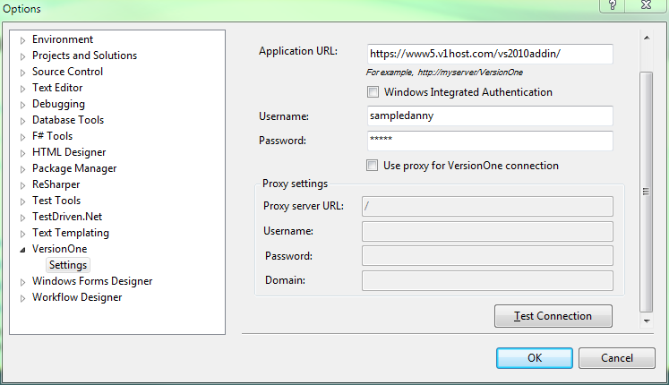
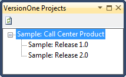
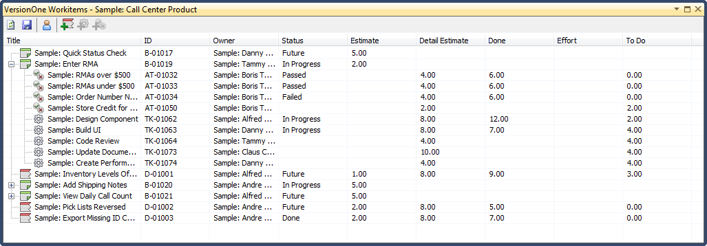

VersionOne Client for Visual Studio
Introduction
Contents
Description
For developers who struggle with keeping their work status up-to-date in the VersionOne browser-based client, the VersionOne Client for Visual Studio is an open-source client that provides a simple view of work from within Visual Studio. Unlike accessing the My Work page in a browser, our Visual Studio Add-In hides the complexity of the full VersionOne application. The VersionOne Client for Visual Studio provides a view that allows Visual Studio users to view and update VersionOne Stories, Defects, Task, and Test. The integration provides access to workitems owned by the configured user, or any other workitem in an active sprint/iteration. This allows Visual Studio users to Signup, Track, and Close VersionOne workitems without needing to leave the IDE.
Usage Notes
- This client requires an on-line connection.
- The notion of active sprint/iteration is a sprint/iteration that has been planned and is not yet closed. If sprints/iterations are not closed then this client provides no means to manually select a sprint/iteration so it shows all active sprints. Avoid clutter by closing sprints/iterations.
- By showing only items in active sprints, this client is not intended for backlog management.
System Requirements
- VersionOne:
- Tested with VersionOne 13.2.4.66. Expected to work with any version higher than 13.1
- Compatible with all VersionOne Editions
- Compatible with all Methodology choices
- Visual Studio:
- Tested with VS2012 SP3.
- .NET Framework 4.5 or higher
Installation
1. Run the VSIX
Run the VSAddin setup vsix file.
2. Configure
Select Options... from the Tools menu, and navigate to the VersionOne
settings as show below.

Enter the configuration parameters as specified in the table below and click Test Connection to ensure that the add-in can both access VersionOne's API and authenticate using the supplied username and password. If the add-in is not configured correctly, or if VersionOne is unavailable (e.g. you are off-network), both the Projects and Tasks windows will inform you of the appropriate error, and provide an option to modify the add-in configuration.
Parameter |
Description |
Example |
|---|---|---|
Application URL |
VersionOne installation URL |
https://www5.v1host.com/vs2010addin/ |
Windows Integrated Authentication |
This option should be enabled when the VersionOne server is configured for Windows Integrated Authentication |
disabled |
Username |
User that will access VersionOne |
sampledanny |
Password |
Password for the username above |
danny |
Use Proxy |
This option should be enabled when the VersionOne server is available through a proxy |
disabled |
Proxy server URL |
This is the URL to your Proxy Server |
blank |
Username |
The username that will get you past this proxy |
blank |
Password |
The password for the Proxy Username |
blank |
Domain |
Name of Proxy Domain |
blank |
Log Messages |
Sets the level of logging for the client |
Warn |
The most common configuration problem is proxy settings. Some organizations automatically configure browser proxy settings or have a transparent proxy (no browser configuration) so many people are unaware of the need for enabling the proxy settings for this client. We recommend checking with a proxy detector such as What Is My IP Address. (This service is not maintained or supported by VersionOne. For definitive information about your proxy configuration always check with your network administrator.) For troubleshooting, consider using the example values in the table above, which point to a hosted sandbox server with sample data.
Usage
The add-in consists of two dockable windows, VersionOne Projects and VersionOne Tasks, accessible via the View menu's Other Windows sub-menu. Additionally, the built-in Visual Studio properties grid is populated with relevant properties dependent on the user's context and focus within either window.
Selecting Projects
As shown below, the VersionOne Projects dockable window displays a
project tree populated with your current projects. To access this
window, go to the View menu, select the Other Windows sub-menu, and
select VersionOne Projects. To choose a specific project to work on,
simply navigate the tree and select it. Note that your project
selection is maintained between uses of Visual Studio (per user, via
Documents And Settings), so after you select the project you may
close this window to preserve real estate within the IDE. The Task
Window (discussed next) displays the current project name in its
window title for project context.

Updating Tasks
Like the VersionOne Projects window, the Tasks window is accessible
by selecting VersionOne Tasks via the View menu's Other Windows
sub-menu. Once you've selected a project you're working on, the Tasks
window will display a grid listing all tasks that belong to you. To
update a task, either modify the attribute directly in the tasks grid
(for the most common properties) or, after selecting the row, use the
Visual Studio properties grid to edit the extended set of task
properties. Once you’re finished updating a Task, click the Save
button to update the task in VersionOne.
